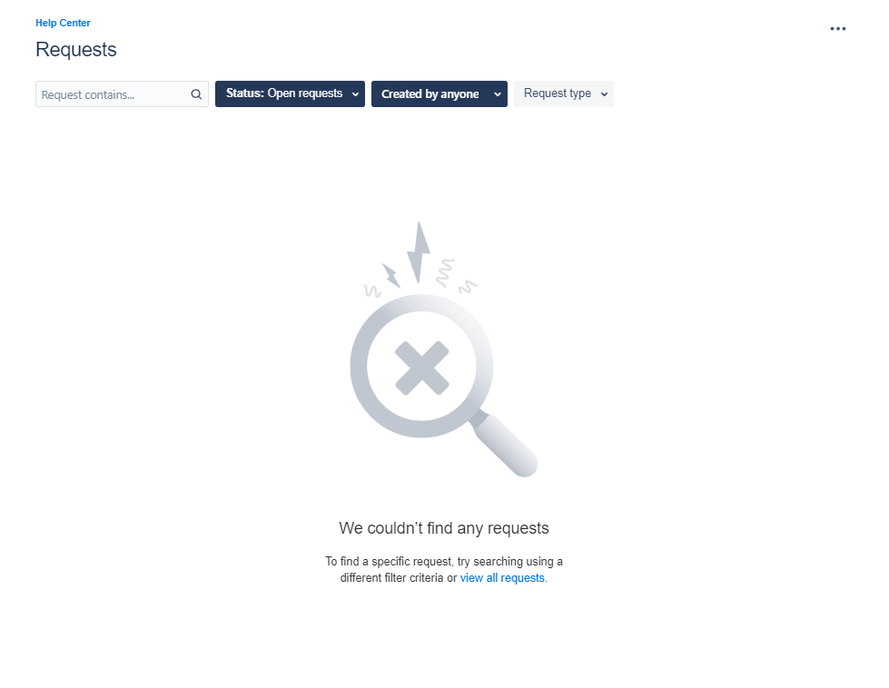
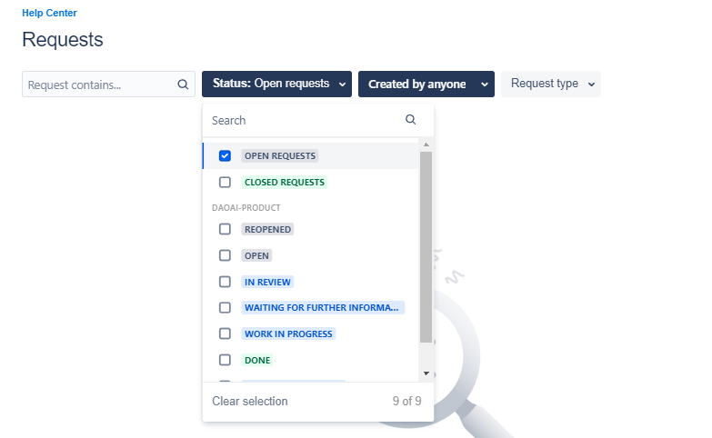
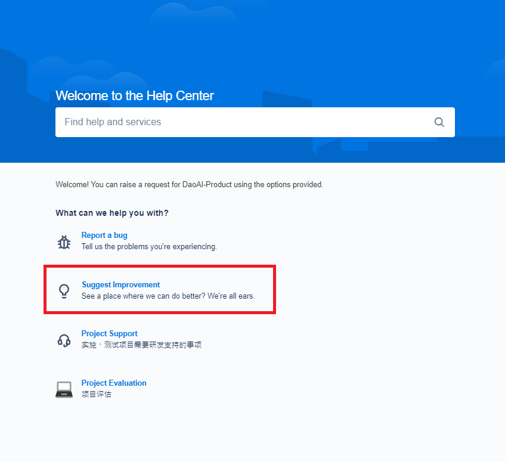
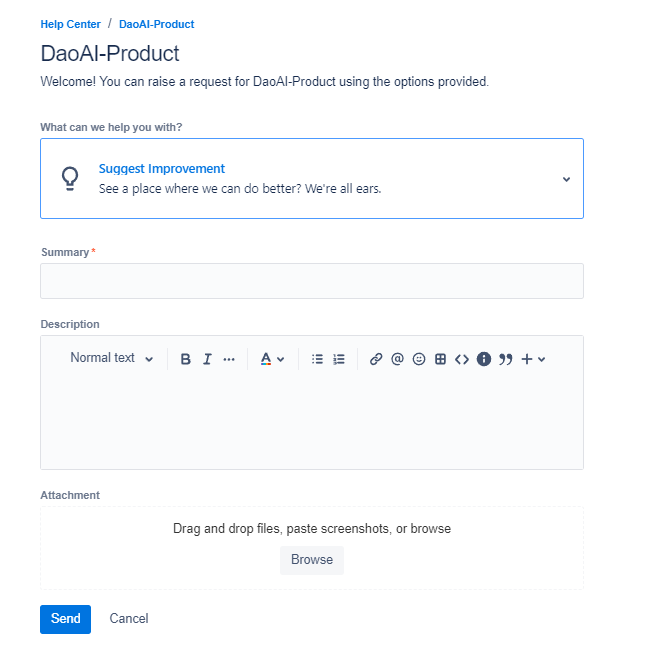

建议一个功能
如果您希望在DaoAI相机工作室中加入一项新功能，请在我们的 帮助中心 提出建议。
搜索相关建议
在您提交您的功能建议之前，请检查是否有其他类似的功能请求已经被提交。
你可以通过点击右上角的 “请求”→全部来查看所有功能建议。
所有目前正在处理的功能建议将显示在列表中。
你可以调整过滤器来搜索特定的请求。
功能请求
一旦你发现你有一个新颖的功能建议，你就可以向我们提出请求!
进入 帮助中心 主页。
选择第二个选项，”建议改进”。
你将被引导到 “建议功能 “页面。
这里有一些其他的信息，如果能包含在描述部分，那将是非常好的。
功能描述
为什么该功能会是一个很好的补充
你的名字
联系电子邮件地址和电话号码（以便我们能够向您更新该功能的信息）
请尽可能详细地填写您的建议，以便我们能够尽快实现您的要求